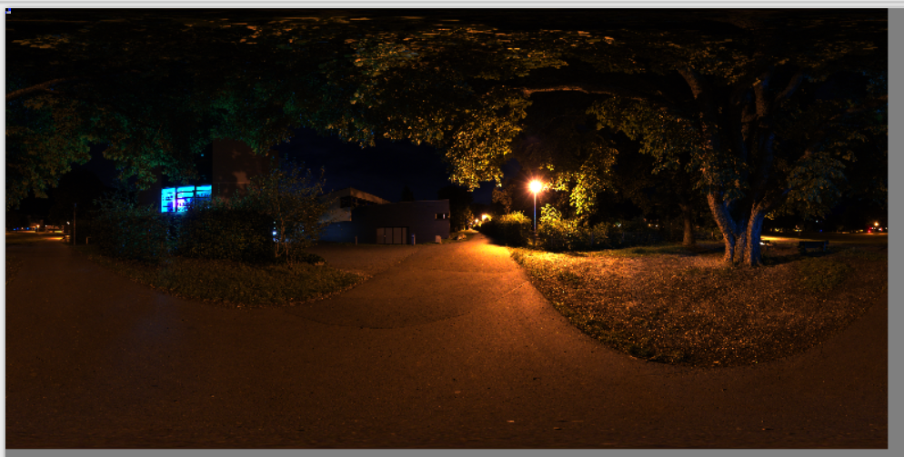
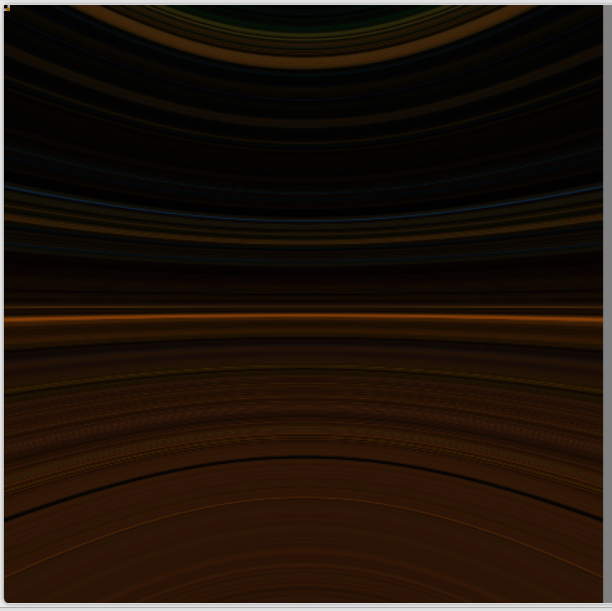

HDR Skybox and IBL Antialiasing
Overview
In my Master's Degree project Bound by Death, we wanted to upgrade our previous IBL system so that it would become more noticeable.
To accomplish this, we wanted to add support for HDR textures as skyboxes, because before we only supported cubemaps.
Problems and objectives
For this task, all we needed to do was convert the HDR images, which use an equirectangular map, to a cubemap and use this cubemap as the source for the already existing skybox pipeline.
I also took the opportunity to implement antialiasing in the Specular IBL to minimize aliasing artifacts.
Technical implementation
The first thing I did was modify the Skybox class to store a reference to an HDR texture.
Then, I created a new render pass that is executed at the start of the Skybox initialization. This pass takes the HDR texture stored in the Skybox and renders a cubemap with 11 mip levels, which is stored where the previous skybox cubemap was configured, maintaining the existing pipeline.
To convert from an equirectangular map to a cubemap, I did the following:
- Convert the position of the pixel to a direction using the camera's view projection.
- Calculate the X value of the UV coordinates for this pixel using atan2 on direction.Z and direction.X.
- Calculate the Y value of the UV coordinates for this pixel using asin on direction.Y.
- Normalize both X and Y values to the 0-1 range.
- Flip both axes to get the correct orientation.
- Sample the HDR skybox texture with the calculated UV coordinates.
With the HDR skybox working, I started implementing the Specular IBL Antialiasing by modifying the Irradiance Skybox Pass and the Prefiltered Environment Skybox Pass.
In both pixel shaders, I use the Normal Distribution Function to calculate the probability density function based on the roughness and the dot product between the normal and the half vector.
Then I compute the mip level to use for each sample as follows:
- Get the probability of each sample using the number of samples and the previously calculated probability density function.
- Get the probability of each texel using the width of the viewport that the shader receives.
- Calculate the log2 of the probability of each sample divided by the probability of each texel, and multiply the result by 0.5. If the result is greater than 0, that is the level to sample; otherwise, the level to sample is 0.
Challenges and problem-solving
I encountered one major issue during development:
Equirectangular to cubemap conversion error.
When converting from equirectangular to cubemap, the rendered cubemap appeared totally distorted along the X axis.
After a bit of debugging, I realized that I had made an error when normalizing the X value of the UVs to the 0-1 range: I was missing some parentheses. I fixed the mathematical operation and it worked fine.


Takeaways and next steps
With this implementation, I learned how to convert an equirectangular map to a cubemap, and I understood how antialiasing works, not just in IBL but on textures too.
In the future, I would like to improve the resource management in the Skybox class, since I feel that right now it is a bit messy.